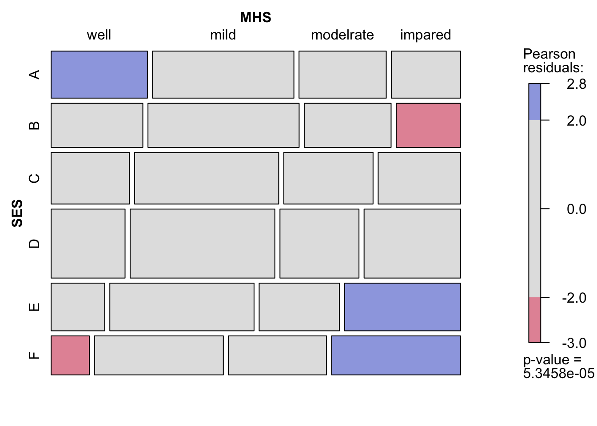

# パッケージの呼び出し
library(tidyverse)
library(DescTools)
library(vcd)
library(gnm)シリーズ編者による内容紹介
「シリーズ編者による内容紹介」の分析は短いが，Rによるカテゴリカルデータ分析の方法の基礎を身につける上ではよい例である．少し長くなるが，基本的な操作方法の説明やクロス表の分析方法について説明したい．
パッケージはtidyverse（データセットの処理のため），DescTools（記述統計を求めるため），vcdパッケージ（カテゴリカルデータの分析のため），gnm（連関分析の処理のため）を使用する．
packmanパッケージがインストールされているのであればそれを用いて呼び出してもよい．
pacman::p_load(
tidyverse,
DescTools,
vcd,
gnm
)独立性の検定
使用するデータは精神的健康と親の社会経済的地位（SES）に関するミッドタウン・マンハッタンデータ（the Midtown Manhattan data）である．元データについて，ここではクロス表（のようにみえる）形式で入力する．これをFreqとする．
# 元データの入力（xページ）
Freq <- c( 64, 94, 58, 46,
57, 94, 54, 40,
57, 105, 65, 60,
72, 141, 77, 94,
36, 97, 54, 78,
21, 71, 54, 71)実際は横に長い一行のベクトルとなる．
# 確認
Freq [1] 64 94 58 46 57 94 54 40 57 105 65 60 72 141 77 94 36 97 54
[20] 78 21 71 54 71このベクトルをmatrix関数を用いて，行列に変換する．これをtabとする（名前は何でもよい）．nrowは行カテゴリ数，ncolは列カテゴリ数である．byrow = TRUEを忘れないように注意すること．またdimnamesで行と列のそれぞれの変数名とカテゴリ名を指定することも可能である．この指定は特に無くてもよい．
# データを表形式に変換
tab <- matrix(
Freq,
nrow = 6,
ncol = 4,
byrow = TRUE,
dimnames = list(
SES = LETTERS[1:6],
MHS = c("well",
"mild",
"modelrate",
"impared")
)
)これで表を再現することができた．
# 確認
tab MHS
SES well mild modelrate impared
A 64 94 58 46
B 57 94 54 40
C 57 105 65 60
D 72 141 77 94
E 36 97 54 78
F 21 71 54 71初歩的なクロス表の分析はここで作成されたtabに対して行う． as.tableによってクラスをmatrixからtableに変えることもできる．分析はどちらであっても問題ないが，周辺分布をMarginsによって確認したいときはクラスをtableに変換しておく必要がある．
# クラスを確認
class(tab)[1] "matrix" "array" str(tab) num [1:6, 1:4] 64 57 57 72 36 21 94 94 105 141 ...
- attr(*, "dimnames")=List of 2
..$ SES: chr [1:6] "A" "B" "C" "D" ...
..$ MHS: chr [1:4] "well" "mild" "modelrate" "impared"# クラスをmatrixからtableに変える
tab <- as.table(tab)
# クラスを確認
class(tab)[1] "table"str(tab) 'table' num [1:6, 1:4] 64 57 57 72 36 21 94 94 105 141 ...
- attr(*, "dimnames")=List of 2
..$ SES: chr [1:6] "A" "B" "C" "D" ...
..$ MHS: chr [1:4] "well" "mild" "modelrate" "impared"クロス表の周辺分布を確認しておく．ここではDescToolsパッケージのMarginsを用いる．
# 注：tabのクラスはtableに変換が必要
DescTools::Margins(tab)$SES
level freq perc cumfreq cumperc
1 A 262 15.8% 262 15.8%
2 B 245 14.8% 507 30.5%
3 C 287 17.3% 794 47.8%
4 D 384 23.1% 1'178 71.0%
5 E 265 16.0% 1'443 86.9%
6 F 217 13.1% 1'660 100.0%
$MHS
level freq perc cumfreq cumperc
1 well 307 18.5% 307 18.5%
2 mild 602 36.3% 909 54.8%
3 modelrate 362 21.8% 1'271 76.6%
4 impared 389 23.4% 1'660 100.0%次にvcdパッケージのmosaicを用いてモザイクプロットを確認する．SESとメンタルヘルスが関連しており，SESが高いほどメンタルヘルスが良好である傾向が確認できる．色のあるセルは，結果を解釈する際に参考にすると良い．
mosaic(tab, shade = TRUE, keep_aspect_ratio = FALSE)
chisq.test関数を用いて，tabに対してカイ2乗検定を行う．ピアソンのカイ2乗値X-squared，自由度df，p値p-valueが得られる．
# 表に対してカイ2乗検定を行う
chisq.test(tab)
Pearson's Chi-squared test
data: tab
X-squared = 45.985, df = 15, p-value = 5.346e-05vcdパッケージのassocstatsではピアソンのカイ2乗統計量\(\chi^2\)だけではなく尤度比統計量\(L^2\)も出力される．本書と同じ結果になっているのかを確認してほしい．
# ピアソンのカイ2乗統計量と尤度比統計量
assocstats(tab) X^2 df P(> X^2)
Likelihood Ratio 47.418 15 3.1554e-05
Pearson 45.985 15 5.3458e-05
Phi-Coefficient : NA
Contingency Coeff.: 0.164
Cramer's V : 0.096 chisq.test(tab)からは他にもいろいろな情報が得られる．ヘルプ?chisq.testかnames関数で確認してみよう．
# ヘルプの方法
?chisq.testnames関数で確認する．
# chisq.test(tab)に含まれるオブジェクトの名前を確認
chisq.test(tab) |> names()[1] "statistic" "parameter" "p.value" "method" "data.name" "observed"
[7] "expected" "residuals" "stdres" せっかくなので全部確認してみたい．
# カイ2乗統計量
chisq.test(tab)$statisticX-squared
45.98526 # 自由度
chisq.test(tab)$parameterdf
15 # p値
chisq.test(tab)$p.value[1] 5.345771e-05# 方法
chisq.test(tab)$method[1] "Pearson's Chi-squared test"# データ名
chisq.test(tab)$data.name[1] "tab"# 観測度数
chisq.test(tab)$observed MHS
SES well mild modelrate impared
A 64 94 58 46
B 57 94 54 40
C 57 105 65 60
D 72 141 77 94
E 36 97 54 78
F 21 71 54 71# 期待度数
chisq.test(tab)$expected MHS
SES well mild modelrate impared
A 48.45422 95.01446 57.13494 61.39639
B 45.31024 88.84940 53.42771 57.41265
C 53.07771 104.08072 62.58675 67.25482
D 71.01687 139.25783 83.73976 89.98554
E 49.00904 96.10241 57.78916 62.09940
F 40.13193 78.69518 47.32169 50.85120# ピアソンの残差 (observed - expected) / sqrt(expected)
chisq.test(tab)$residuals MHS
SES well mild modelrate impared
A 2.23329871 -0.10407326 0.11444464 -1.96493132
B 1.73663030 0.54642528 0.07829468 -2.29805854
C 0.53837330 0.09010757 0.30504342 -0.88463658
D 0.11666251 0.14763196 -0.73650978 0.42319500
E -1.85826240 0.09156111 -0.49844745 2.01776175
F -3.02004713 -0.86745061 0.97081545 2.82552047# 標準化残差 (observed - expected) / sqrt(V)
chisq.test(tab)$stdres MHS
SES well mild modelrate impared
A 2.69558120 -0.14205313 0.14103036 -2.44697258
B 2.08347524 0.74134065 0.09590136 -2.84458018
C 0.65570340 0.12410557 0.37931249 -1.11164198
D 0.14738903 0.21092123 -0.95000069 0.55163334
E -2.24532455 0.12510918 -0.61489791 2.51546393
F -3.58789516 -1.16540491 1.17753617 3.46338368期待度数はchisq.test(tab)$expectedとすればよい．これをtab_expectedというオブジェクトとする．
# ixページの期待度数
tab_expected <- chisq.test(tab)$expected |> as.table()
tab_expected MHS
SES well mild modelrate impared
A 48.45422 95.01446 57.13494 61.39639
B 45.31024 88.84940 53.42771 57.41265
C 53.07771 104.08072 62.58675 67.25482
D 71.01687 139.25783 83.73976 89.98554
E 49.00904 96.10241 57.78916 62.09940
F 40.13193 78.69518 47.32169 50.85120なお，DescTools::ExpFreq(tab)でも同様の期待度数を求めることができる．
Margins(tab_expected)$SES
level freq perc cumfreq cumperc
1 A 262 15.8% 262 15.8%
2 B 245 14.8% 507 30.5%
3 C 287 17.3% 794 47.8%
4 D 384 23.1% 1'178 71.0%
5 E 265 16.0% 1'443 86.9%
6 F 217 13.1% 1'660 100.0%
$MHS
level freq perc cumfreq cumperc
1 well 307 18.5% 307 18.5%
2 mild 602 36.3% 909 54.8%
3 modelrate 362 21.8% 1'271 76.6%
4 impared 389 23.4% 1'660 100.0%ixページの数式用いて，実際に計算することでピアソンの\(\chi^2\)統計量と尤度比統計量\(L^2\)を求める（英語版のテキストは式に間違いがあるので注意）．
\(\chi^2 = \sum_i \sum_j \frac{\left(f_{ij} - F_{ij}\right)^2}{F_{ij}}\)
\(L^2 = 2 \sum_i \sum_j f_{ij} \log \frac{f_{ij}}{F_{ij}}\)
- 自由度についても
nrowとncolを用いて計算（prod(dim(tab) -1)でもよい）．list関数は様々なもの（値，ベクトル，データ，リスト等）をまとめ，並べて表示するときに用いる．
# 適合度（X2とL2）
X2 <- sum(((tab - tab_expected)^2 / tab_expected))
L2 <- 2*sum((tab * log(tab / tab_expected)))
# 自由度
df <- (nrow(tab) - 1) * (ncol(tab) - 1)
# df <- prod(dim(tab) -1)
# 結果をリストで表示
list("自由度" = df,
"ピアソンのカイ2乗統計量" = X2,
"尤度比統計量" = L2)$自由度
[1] 15
$ピアソンのカイ2乗統計量
[1] 45.98526
$尤度比統計量
[1] 47.41785一様連関モデル
- ページixの一様連関モデルを再現する．
データの準備
- 多元表の分析は表形式（table form）ではなく，度数，行変数，列変数からなる集計データを作成して行うことが多い．このデータの形式は度数形式（frequency form）と呼ばれる．
- 先程のデータについてもクロス表ではなく，次のような集計データを作成する．
- データを表示して確認する．
knitrパッケージのkable関数を使い，html形式でデータを示す．
| Freq | PSES | MHS |
|---|---|---|
| 64 | 1 | 1 |
| 94 | 1 | 2 |
| 58 | 1 | 3 |
| 46 | 1 | 4 |
| 57 | 2 | 1 |
| 94 | 2 | 2 |
| 54 | 2 | 3 |
| 40 | 2 | 4 |
| 57 | 3 | 1 |
| 105 | 3 | 2 |
| 65 | 3 | 3 |
| 60 | 3 | 4 |
| 72 | 4 | 1 |
| 141 | 4 | 2 |
| 77 | 4 | 3 |
| 94 | 4 | 4 |
| 36 | 5 | 1 |
| 97 | 5 | 2 |
| 54 | 5 | 3 |
| 78 | 5 | 4 |
| 21 | 6 | 1 |
| 71 | 6 | 2 |
| 54 | 6 | 3 |
| 71 | 6 | 4 |
- 度数については先程作成した
Freqを使う． gl（Generate Factor Levels）によって度数に対応するカテゴリを作成する．数値で作成してもよいが，その場合は最後にfactorに変換しておく．
# 度数のベクトル
Freq [1] 64 94 58 46 57 94 54 40 57 105 65 60 72 141 77 94 36 97 54
[20] 78 21 71 54 71# 行変数
PSES <- gl(n = 6, k = 4)
PSES [1] 1 1 1 1 2 2 2 2 3 3 3 3 4 4 4 4 5 5 5 5 6 6 6 6
Levels: 1 2 3 4 5 6# 列変数
MHS <- gl(n = 4, k = 1, length = 24)
MHS [1] 1 2 3 4 1 2 3 4 1 2 3 4 1 2 3 4 1 2 3 4 1 2 3 4
Levels: 1 2 3 4- 以上で作成した度数（
Freq），行変数（PSES），列変数（MHS）のベクトルを用いてデータを作成する．
# 度数，行変数，列変数からなる度数形式データを作成
d <- tibble(Freq, PSES, MHS)
# データの確認
d# A tibble: 24 × 3
Freq PSES MHS
<dbl> <fct> <fct>
1 64 1 1
2 94 1 2
3 58 1 3
4 46 1 4
5 57 2 1
6 94 2 2
7 54 2 3
8 40 2 4
9 57 3 1
10 105 3 2
# ℹ 14 more rows- このような形式のデータにすることで柔軟なモデリングを行うことができる．
- なお
gnmパッケージにはmentalHealthというデータがそもそも存在するのでそれを用いてもよい． - 表形式データからこのような度数形式データを作成する場合は
data.frameを用いれば簡単である．
data.frame(tab) SES MHS Freq
1 A well 64
2 B well 57
3 C well 57
4 D well 72
5 E well 36
6 F well 21
7 A mild 94
8 B mild 94
9 C mild 105
10 D mild 141
11 E mild 97
12 F mild 71
13 A modelrate 58
14 B modelrate 54
15 C modelrate 65
16 D modelrate 77
17 E modelrate 54
18 F modelrate 54
19 A impared 46
20 B impared 40
21 C impared 60
22 D impared 94
23 E impared 78
24 F impared 71- 逆に度数形式データから表形式データを作成するためには
xtabsを用いる．
xtabs(Freq ~ SES + MHS, data = data.frame(tab)) MHS
SES well mild modelrate impared
A 64 94 58 46
B 57 94 54 40
C 57 105 65 60
D 72 141 77 94
E 36 97 54 78
F 21 71 54 71独立モデル
- この形式のデータ（
Freq）に対して，独立モデルによる分析を行う．これは先程の独立性の検定と同じ結果となる． |>はパイプ演算子であり，パイプ演算子を使うとfunction(x)をx |> function()とすることができ，処理の流れが分かりやすくなる．引数（argument）が複数ある場合（例えばfunction(x, y)）はパイプ演算子の左辺は1つめの引数として用いられる．つまり，function(x, y)はx |> function(y)とすればよい．ではy |>とする場合は，y |> function(x, _)とすることでfunction(x, y)と同じ結果を得ることができる．_はプレースホルダーと呼ばれ，引数が適用される場所を示している．dというデータに対して，gnmを適用する．度数 ~ 行変数 + 列変数といった形で関連を指定する．glmを使ってもよいが，最終的にはgnmを使うことになるので，ここではgnmを用いる．- モデルの分布族（family）は
poisson（ポワソン分布）とする．これを忘れるとgaussian（正規分布）が適用され，異なる結果が出力されるので注意する．gnm内でdata = _となっているが_にはパイプ演算子の左辺にあるdが入る．つまりこれはdata = dとすることに等しい． - こうして得られた分析の結果を
Oとしている．
# 独立モデル
O <- d |>
gnm(Freq ~ PSES + MHS,
family = poisson,
tolerance = 1e-12,
data = _)- 結果は
O（係数と最小限の適合度のみ）あるいはsummary(O)（標準誤差やp値を含んだモデルの結果の要約）で確認できる．
# 結果の表示
O
Call:
gnm(formula = Freq ~ PSES + MHS, family = poisson, data = d,
tolerance = 1e-12)
Coefficients:
(Intercept) PSES2 PSES3 PSES4 PSES5 PSES6
3.88062 -0.06709 0.09114 0.38230 0.01139 -0.18845
MHS2 MHS3 MHS4
0.67341 0.16480 0.23673
Deviance: 47.41785
Pearson chi-squared: 45.98526
Residual df: 15 summary(O)
Call:
gnm(formula = Freq ~ PSES + MHS, family = poisson, data = d,
tolerance = 1e-12)
Deviance Residuals:
Min 1Q Median 3Q Max
-3.3260 -0.7806 0.1028 0.5343 2.6643
Coefficients:
Estimate Std. Error z value Pr(>|z|)
(Intercept) 3.88062 0.08045 48.238 < 2e-16 ***
PSES2 -0.06709 0.08887 -0.755 0.45034
PSES3 0.09114 0.08545 1.067 0.28615
PSES4 0.38230 0.08013 4.771 1.83e-06 ***
PSES5 0.01139 0.08712 0.131 0.89603
PSES6 -0.18845 0.09179 -2.053 0.04007 *
MHS2 0.67341 0.07013 9.602 < 2e-16 ***
MHS3 0.16480 0.07759 2.124 0.03367 *
MHS4 0.23673 0.07634 3.101 0.00193 **
---
Signif. codes: 0 '***' 0.001 '**' 0.01 '*' 0.05 '.' 0.1 ' ' 1
(Dispersion parameter for poisson family taken to be 1)
Residual deviance: 47.418 on 15 degrees of freedom
AIC: 209.59
Number of iterations: 5- 他にもどのような情報があるのかをヘルプか
namesで確認する．
names(O) [1] "call" "formula" "terms" "data"
[5] "eliminate" "ofInterest" "na.action" "xlevels"
[9] "offset" "tolerance" "iterStart" "iterMax"
[13] "coefficients" "residuals" "fitted.values" "rank"
[17] "family" "predictors" "deviance" "aic"
[21] "iter" "weights" "prior.weights" "df.residual"
[25] "y" "converged" "constrain" "constrainTo"
[29] "x" "model" names(summary(O)) [1] "call" "ofInterest" "family" "deviance"
[5] "aic" "df.residual" "iter" "deviance.resid"
[9] "coefficients" "eliminated" "dispersion" "df"
[13] "cov.scaled" - 結果には期待度数
fitted.valuesがあるので，これを用いて適合度を計算してみる． - 観測度数については
Freqの変わりにO$yを用いてもよい．これはモデルOで使用された従属変数yであり，Freqそのものである．
# 期待度数をexpected_Oとする
observed <- O$y
expected_O <- O$fitted.values
# 行と列のカテゴリ数を水準の数から求める
I <- d$PSES |> levels() |> length()
J <- d$MHS |> levels() |> length()
# 自由度
df_O <- (I - 1) * (J - 1)
# 適合度（X2とL2）
X2_O <- ((observed - expected_O)^2 / expected_O) |> sum()
L2_O <- (observed * log(observed / expected_O)) |> sum() * 2
# リストでまとめて表示
list("自由度" = df_O,
"ピアソンのカイ2乗統計量" = X2_O,
"尤度比統計量" = L2_O)$自由度
[1] 15
$ピアソンのカイ2乗統計量
[1] 45.98526
$尤度比統計量
[1] 47.41785summary(O)ではResidual deviance: 47.418 on 15 degrees of freedomとなっており，先程の分析と適合度は一致する．
一様連関モデル
- 次に一様連関モデル（Uniform association model）による分析を行う．
PSESをas.integer関数で整数にしたものをRscore，MHSをas.integer関数で整数にしたものをCscoreとして，mutate関数でデータに新たに変数を作成している．更に平均値を引いて中心化している．d <- d |>はmutate変数を追加して元のデータに上書きをしている．- 変数の追加された
dデータに対して，一様連関モデルによる分析をgnmパッケージで行う． - 独立モデルとの違いは，作成した整数スコアの積
Rscore:Cscoreがモデルに追加されているだけである．Rscore*CscoreとするとRscoreとCscoreも表示されるが結果は変わらない．
# 行変数と列変数を連続した整数値とする
d <- d |>
mutate(Rscore = as.integer(PSES),
Rscore = Rscore - mean(Rscore),
Cscore = as.integer(MHS),
Cscore = Cscore - mean(Cscore))
# 一様連関モデル
U <- d |>
gnm(Freq ~ PSES + MHS + Rscore:Cscore,
family = poisson,
tolerance = 1e-12,
data = _)
# 結果の表示
summary(U)
Call:
gnm(formula = Freq ~ PSES + MHS + Rscore:Cscore, family = poisson,
data = d, tolerance = 1e-12)
Deviance Residuals:
Min 1Q Median 3Q Max
-1.2663 -0.3285 0.2025 0.3912 1.0820
Coefficients:
Estimate Std. Error z value Pr(>|z|)
(Intercept) 3.83878 0.07926 48.436 < 2e-16 ***
PSES2 -0.04989 0.08908 -0.560 0.57542
PSES3 0.11692 0.08599 1.360 0.17390
PSES4 0.40787 0.08087 5.044 4.56e-07 ***
PSES5 0.02784 0.08778 0.317 0.75108
PSES6 -0.19002 0.09251 -2.054 0.03997 *
MHS2 0.69632 0.07059 9.864 < 2e-16 ***
MHS3 0.18951 0.07827 2.421 0.01547 *
MHS4 0.24230 0.07709 3.143 0.00167 **
Rscore:Cscore 0.09069 0.01501 6.043 1.51e-09 ***
---
Signif. codes: 0 '***' 0.001 '**' 0.01 '*' 0.05 '.' 0.1 ' ' 1
(Dispersion parameter for poisson family taken to be 1)
Residual deviance: 9.8951 on 14 degrees of freedom
AIC: 174.07
Number of iterations: 4# 適合度（X2とL2）
observed <- U$y
expected_U <- U$fitted.values
df_U <- (I - 1)*(J - 1) - 1
X2_U <- ((observed - expected_U)^2 / expected_U) |> sum()
L2_U <- (observed * log(observed / expected_U)) |> sum() * 2
list("自由度" = df_U,
"ピアソンのカイ2乗統計量" = X2_U,
"尤度比統計量" = L2_U)$自由度
[1] 14
$ピアソンのカイ2乗統計量
[1] 9.731848
$尤度比統計量
[1] 9.895124結果がixページと一致することを確認してほしい．
なお，尤度比統計量\(L^2\)と自由度は次のように求めることができる．
# 独立モデルのL
O$deviance[1] 47.41785# 独立モデルのdf
O$df.residual[1] 15# 一様連関モデルのL
U$deviance[1] 9.895124# 一様連関モデルのdf
U$df.residual[1] 14- 尤度比統計量\(L^2\)と自由度の差を求める場合
anova関数を用いる．
anova(O, U)Analysis of Deviance Table
Model 1: Freq ~ PSES + MHS
Model 2: Freq ~ PSES + MHS + Rscore:Cscore
Resid. Df Resid. Dev Df Deviance
1 15 47.418
2 14 9.895 1 37.523- 以上で本書の序文の再現は終了である．
度数，行変数，列変数のデータからクロス表を作成
- 度数，行変数，列変数のデータからクロス表を作成するには
xtabs関数を用いる．
d |> xtabs(Freq ~ PSES + MHS, data = _) MHS
PSES 1 2 3 4
1 64 94 58 46
2 57 94 54 40
3 57 105 65 60
4 72 141 77 94
5 36 97 54 78
6 21 71 54 71- Rに初めから準備されている
Titanicデータは，多少特殊な集計がされているが，これにdata.frame関数を適用すると，集計データになる．これに対してxtabs関数を用いればクロス表を簡単に作成できる．
data.frame(Titanic) |> xtabs(Freq ~ Class + Survived, data = _) Survived
Class No Yes
1st 122 203
2nd 167 118
3rd 528 178
Crew 673 212data.frame(Titanic) |> xtabs(Freq ~ Sex + Survived, data = _) Survived
Sex No Yes
Male 1364 367
Female 126 344data.frame(Titanic) |> xtabs(Freq ~ Age + Survived, data = _) Survived
Age No Yes
Child 52 57
Adult 1438 654個票データから集計データを作成
- 個票データから集計データを作成する方法はいくつか考えられるが，ここでは
count関数を用いる．
# スターウォーズデータ
starwars# A tibble: 87 × 14
name height mass hair_color skin_color eye_color birth_year sex gender
<chr> <int> <dbl> <chr> <chr> <chr> <dbl> <chr> <chr>
1 Luke Sk… 172 77 blond fair blue 19 male mascu…
2 C-3PO 167 75 <NA> gold yellow 112 none mascu…
3 R2-D2 96 32 <NA> white, bl… red 33 none mascu…
4 Darth V… 202 136 none white yellow 41.9 male mascu…
5 Leia Or… 150 49 brown light brown 19 fema… femin…
6 Owen La… 178 120 brown, gr… light blue 52 male mascu…
7 Beru Wh… 165 75 brown light blue 47 fema… femin…
8 R5-D4 97 32 <NA> white, red red NA none mascu…
9 Biggs D… 183 84 black light brown 24 male mascu…
10 Obi-Wan… 182 77 auburn, w… fair blue-gray 57 male mascu…
# ℹ 77 more rows
# ℹ 5 more variables: homeworld <chr>, species <chr>, films <list>,
# vehicles <list>, starships <list># 1つの変数にcount関数を適用
starwars |>
count(sex)# A tibble: 5 × 2
sex n
<chr> <int>
1 female 16
2 hermaphroditic 1
3 male 60
4 none 6
5 <NA> 4# 2つの変数にcount関数を適用し，集計レベルのデータを作成
starwars |>
count(sex, gender)# A tibble: 6 × 3
sex gender n
<chr> <chr> <int>
1 female feminine 16
2 hermaphroditic masculine 1
3 male masculine 60
4 none feminine 1
5 none masculine 5
6 <NA> <NA> 4# 欠損値を処理し，nをFreqと名前を変更し，df_dstarwarsとしてデータを保存
df_dstarwars <- starwars |>
count(sex, gender) |>
drop_na() |>
rename(Freq = n)
# 確認
df_dstarwars# A tibble: 5 × 3
sex gender Freq
<chr> <chr> <int>
1 female feminine 16
2 hermaphroditic masculine 1
3 male masculine 60
4 none feminine 1
5 none masculine 5集計データを個票データに変換
集計データを個票データに変換したいときにはvcdExtraパッケージのexpand.dftを用いる．
library(vcdExtra)
d_ind <- expand.dft(d, dreq = "Freq")
d_ind# A tibble: 1,660 × 4
PSES MHS Rscore Cscore
<int> <int> <dbl> <dbl>
1 1 1 -2.5 -1.5
2 1 1 -2.5 -1.5
3 1 1 -2.5 -1.5
4 1 1 -2.5 -1.5
5 1 1 -2.5 -1.5
6 1 1 -2.5 -1.5
7 1 1 -2.5 -1.5
8 1 1 -2.5 -1.5
9 1 1 -2.5 -1.5
10 1 1 -2.5 -1.5
# ℹ 1,650 more rows3元クロス分類表の入力
data <- c(
2,5,1,
2,4,7,
4,7,5,
8,0,1,
10,11,5,
1,3,4,
1,1,1,
2,3,4)
array(data, dim = c(2,3,4)), , 1
[,1] [,2] [,3]
[1,] 2 1 4
[2,] 5 2 7
, , 2
[,1] [,2] [,3]
[1,] 4 5 0
[2,] 7 8 1
, , 3
[,1] [,2] [,3]
[1,] 10 5 3
[2,] 11 1 4
, , 4
[,1] [,2] [,3]
[1,] 1 1 3
[2,] 1 2 4tab1 <- c(2,5,1,
2,4,7) |> matrix(nrow = 2, ncol = 3, byrow =TRUE)
tab2 <- c(4,7,5,
8,0,1) |> matrix(nrow = 2, ncol = 3, byrow =TRUE)
tab3 <- c(10,11,5,
1,3,4) |> matrix(nrow = 2, ncol = 3, byrow =TRUE)
tab4 <- c(1,1,1,
2,3,4) |> matrix(nrow = 2, ncol = 3, byrow =TRUE)
tab_merge <- array(c(tab1,tab2,tab3,tab4), dim = c(2,3,4))
tab_merge, , 1
[,1] [,2] [,3]
[1,] 2 5 1
[2,] 2 4 7
, , 2
[,1] [,2] [,3]
[1,] 4 7 5
[2,] 8 0 1
, , 3
[,1] [,2] [,3]
[1,] 10 11 5
[2,] 1 3 4
, , 4
[,1] [,2] [,3]
[1,] 1 1 1
[2,] 2 3 4dimnames(tab_merge) <- list(R = c("men","women"),
C = c("blue","red","green"),
L = c("north","south","east","west"))
tab_merge, , L = north
C
R blue red green
men 2 5 1
women 2 4 7
, , L = south
C
R blue red green
men 4 7 5
women 8 0 1
, , L = east
C
R blue red green
men 10 11 5
women 1 3 4
, , L = west
C
R blue red green
men 1 1 1
women 2 3 4# フラットな形式で3元表を表示
ftable(tab_merge) L north south east west
R C
men blue 2 4 10 1
red 5 7 11 1
green 1 5 5 1
women blue 2 8 1 2
red 4 0 3 3
green 7 1 4 4Friendly and Meyer (2016) を参考に表を作成．
| 元のデータ形式 | 変換後のデータ形式 | 方法 |
|---|---|---|
| ケース形式 | 度数形式 | data.frame(table(d$A,d$B)) |
| ケース形式 | 表形式 | table(d$A,d$B) |
| 度数形式 | ケース形式 | expand.dfr(X) |
| 度数形式 | 表形式 | xtabs(Freq ~ A + B) |
| 表形式 | ケース形式 | expand.dfr(X) |
| 表形式 | 度数形式 | data.frame(tab) |
練習問題
- せっかくデータを入力したので，このデータを使ってGoodman（1979）の表5A，表5B，表5Cの結果を再現しよう．
- 分析方法については第2章のプログラムを参考にしてほしい．
参考文献
- Goodman, Leo A. 1979. “Simple Models for the Analysis of Association in Cross-Classifications Having Ordered Categories.”Journal of the American Statistical Association 74(367):537–52.